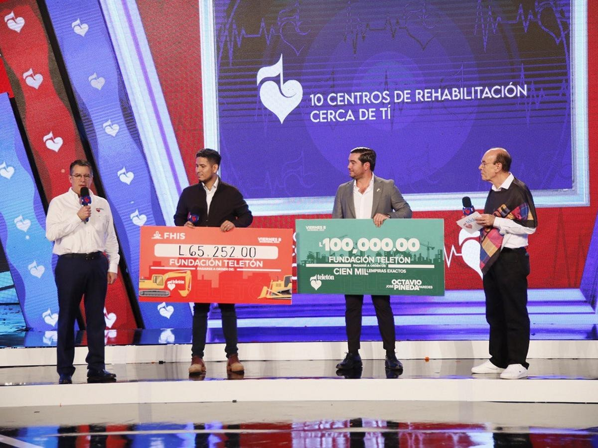
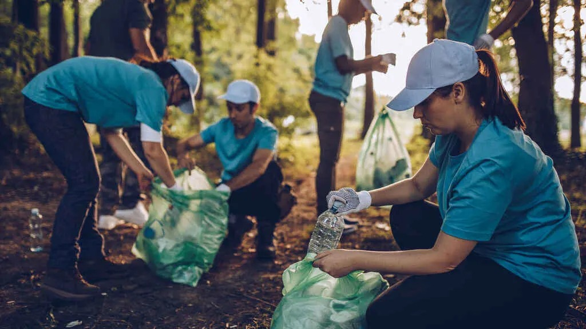
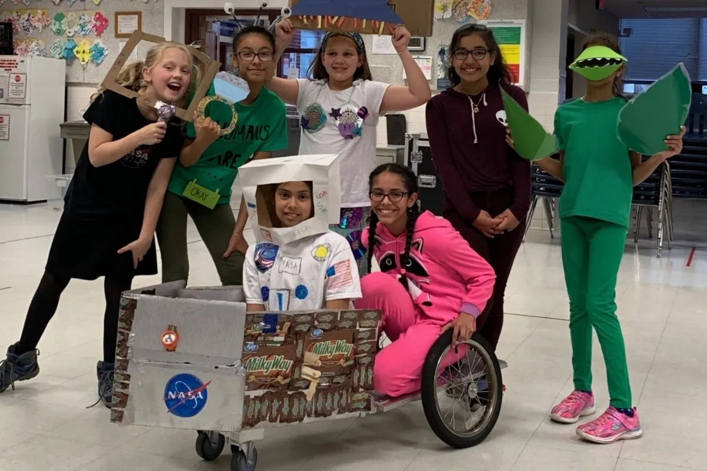

¿Cómo Ayudar?
Hay muchas maneras en las que puedes contribuir y apoyar nuestra causa:
- Donaciones: Aceptamos donaciones monetarias para ayudar a financiar nuestros programas y proyectos comunitarios, destinados a mejorar la calidad de vida de las personas necesitadas. Además, nos comprometemos a apoyar eventos benéficos como la Teletón Honduras, no solo recaudando fondos vitales, sino también concientizando sobre la importancia de respaldar a quienes enfrentan desafíos físicos y emocionales, como parte de nuestro compromiso con la solidaridad y la inclusión.
- Para realizar una donación, ve al apartado de "Donaciones" donde podrás hacer tu contribución de manera segura y sencilla, por medio de un formulario.
- Voluntariado: Únete a nuestro equipo de voluntarios y ayuda en actividades y eventos organizados por nuestro equipo de trabajo en Bodega Guty. Tu participación como voluntario no solo contribuye al bienestar de nuestra comunidad, sino que también fortalece nuestro compromiso con la solidaridad y el apoyo mutuo. Con tu ayuda, podemos marcar la diferencia en la vida de quienes más lo necesitan.
- Para inscribirte, ve al apartado de "Contáctenos" y así obtienes mayor información para asistir.
- Participación en Eventos: Únete y participa en nuestros eventos benéficos organizados por Bodega Guty para ayudarnos a recaudar fondos y concientizar sobre nuestras causas. Tu presencia y participación activa en estos eventos son fundamentales para el éxito de nuestras iniciativas solidarias.
- Para participar en nuestros eventos de recaudación de fondos, te animamos a explorar la sección de "Eventos".


